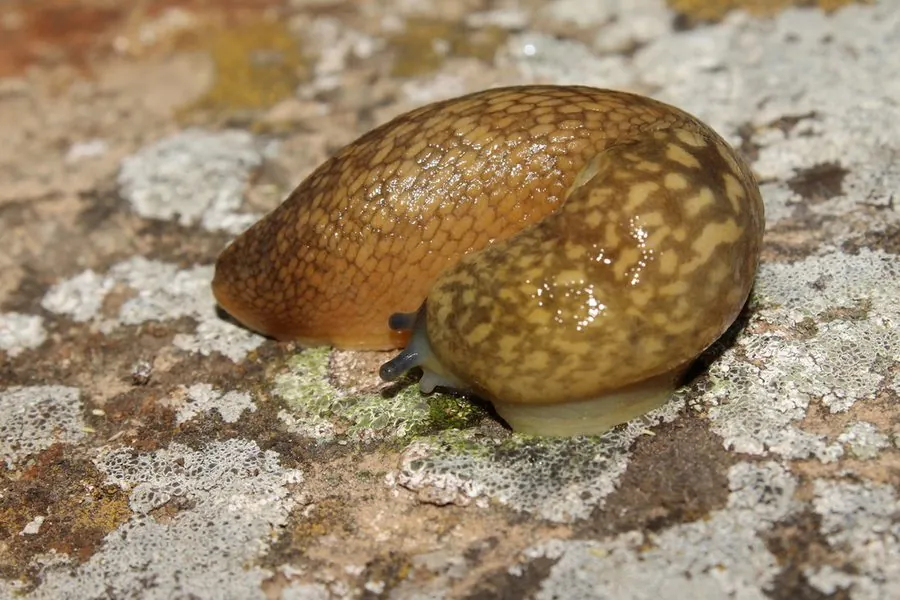

软体动物 · 动物界
黄蛞蝓 Limax flavus

没有外壳的陆生软体动物，体色黄褐带斑点，爬行时留下黏液痕迹，喜欢潮湿阴暗的庭院和菜地，是常见的农业害虫。
- 分类
- 门软体动物门纲腹足纲目柄眼目科蛞蝓科属蛞蝓属
- 栖息环境
- 潮湿阴暗的庭院、菜地、石缝和落叶堆，昼伏夜出
- 地理分布
- 欧洲及世界多地，中国多地有分布
- 保护级别
- 暂无评估；中国未列入国家重点保护野生动物名录
物种志
黄蛞蝓的身体柔软、细长，没有外壳，成体体长一般 8–12 cm。体色黄褐或灰黄，体表布满不规则的深色斑点和网状纹，黏液丰富，摸起来非常滑腻。头部有两对触角，后一对触角的末端长着眼睛。
黄蛞蝓分布于欧洲及世界多地，中国也有分布。它栖息于潮湿阴暗的庭院、菜地、石缝和落叶堆中，昼伏夜出，雨后活动频繁。它是杂食性动物，啃食蔬菜、花卉、真菌和腐殖质，是农业和园艺上的常见害虫。黄蛞蝓雌雄同体，异体交配，把卵产在潮湿的土壤中。它爬行时分泌黏液，在干燥或粗糙的表面也能移动，爬过的地方会留下银白色的痕迹，这是判断它行踪的线索。蛞蝓还可能携带寄生虫，不宜生食或让儿童把玩。目前它没有IUCN 的正式评估，中国未将其列入国家重点保护野生动物名录。
形态与习性
- 食性杂食性，啃食蔬菜、花卉、真菌和腐殖质
- 体长成体一般 8–12 cm
- 栖息环境潮湿阴暗的庭院、菜地、石缝和落叶堆
- 繁殖雌雄同体，异体交配，卵产在潮湿土壤中
- 运动分泌黏液滑行，爬过处留下银白色痕迹
- 危害农业和园艺害虫，可能携带寄生虫
趣味知识
- 黄蛞蝓没有外壳，靠分泌黏液在粗糙的表面滑行。
- 它爬过的地方会留下银白色的黏液痕迹，这是判断它行踪的线索。
- 蛞蝓是雌雄同体，两只个体交配后都能产卵。